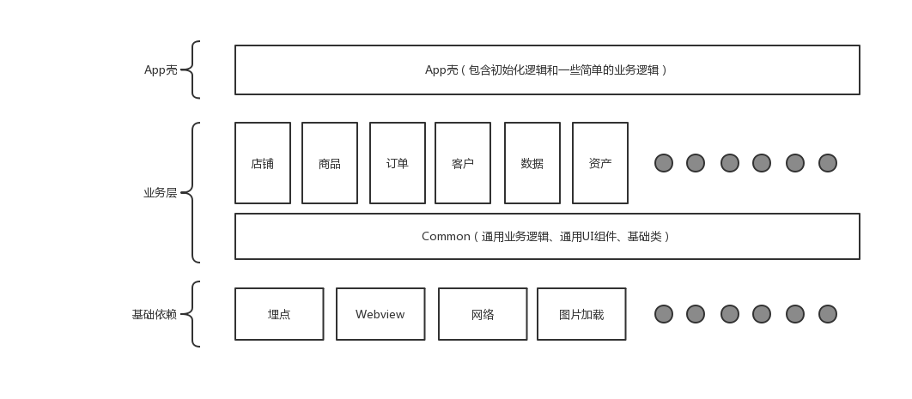

Android 组件化方案
茄子
Created: 2019-04-20 Sat 18:46
概述
目前有赞移动端的主要工作内容是在“有赞微商城”和“有赞零售”两条公司主要的业务线，随着有赞 Saas 业务的增长，客户端也不断迭代，支持越来越多的功能。在这个业务快速增长的情况下，移动端技术的整体架构也是一直在不断调整，来保证开发效率和业务的快速迭代。
现状
客户端的架构，也从一开始的“All IN ONE” 模式（即所有代码都在 App 中），逐渐演变到目前的一个单 Project 多 Module 结构：

痛点
- 日益复杂的 Common 模块，逻辑复杂，依赖不清晰，不敢随便改动 Common 代码，造成大量冗余代码和无法维护的业务逻辑
- 随着业务模块的增多，打包速度一发不可收拾；从倒杯水的时间到下楼吃个饭的时间，大大减慢了开发节奏
- 由于业务模块跟项目中的上层（App 壳）和下层（Common 模块）耦合
- 业务模块增多，由于业务模块没有自己的生命周期，无法实现模块之间的隔离，整体模块控制比较混乱
需要解决的问题
- 去 Common 化，需要将 Common 层的业务向上抽离，通用的底层和基础组件、公用 UI 组件抽成单独的依赖
- 移动端业务服务化，解耦现有业务，抽象出业务接口，业务模块只向外暴露自己的接口，并实现跨模块之间的调用
- 能够配置单模块或者多模块打包，不用每次调试都全量打包，费时费力，又影响开发的节奏
- 业务模块的依赖和发布管理
公共业务去中心化
跟很多客户端的同学聊过，很多 APP 发展到一定阶段之后，必然会诞生一个所谓的 Common 模块。它就像一个大储物柜，每个人都把一些其他人可能用到的东西一股脑儿塞进去。这么个塞法，会有两个问题：
- 冗余：比如一些工具类，很多时候，当你找不到需要的工具类的时候，你可能会塞一个新的进去
- 维护成本高：所有公用的业务逻辑的实现都在 Common 中，对一些公用业务逻辑的影响面无法掌控
Common 里面都有什么？
- 工具类
- 公用的 UI 组件
- 多个业务模块都公用的业务类
- 基础组件的封装类（图片库、网络库、Webview）
- 封装的一些基类（BaseActivity，BaseFragment 什么的）
- 等等等等
解决的思路
- 将公用的业务模块向上抽离到业务模块中（所谓业务模块的服务化）
- 将基础组件抽象到一个独立的组件中
- 将一些基下沉到不包含业务逻辑的底层核心库中
业务模块服务化
“服务化”这个词，好像是在服务端的开发中经常被提到，简单来说，就是根据业务划分为多个模块，模块之间的交互以互相提供服务的方式来完成。而客户端随着业务模块的增多，也必然存在业务模块之间存在业务依赖的情况，客户端这边老的处理方式一般有两种：
- A 模块直接依赖 B 模块，直接调用 B 模块的代码逻辑
- 将 A 模块中的公用部分放到 Common 模块中，提供给其他模块调用